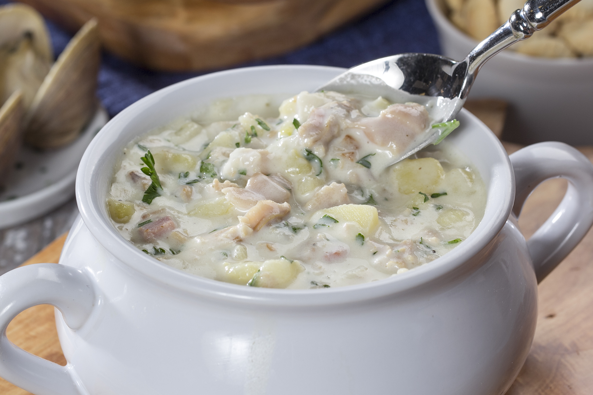

New England Clam Chowder

Description
New England clam chowder normally contains clams, potatoes, onions, salted pork and milk or cream. The addition of dairy is considered the biggest difference from other chowders. New England clam chowder is a classic American staple, first eaten by settlers as early as the 1700s
Ingredients
- 4 center-cut bacon strips
- 2 celery ribs, chopped
- 1 large onion, chopped
- 1 garlic clove, minced
- 3 small potatoes, peeled and cubed
- 1 cup water
- 1 bottle (8 ounces) clam juice
- 3 teaspoons reduced-sodium chicken bouillon granules
- 1/4 teaspoon white pepper
- 1/4 teaspoon dried thyme
- 1/3 cup all-purpose flour
- 2 cups fat-free half-and-half, divided
- 2 cans (6-1/2 ounces each) chopped clams, undrained
Steps
- In a Dutch oven, cook bacon over medium heat until crisp. Remove to paper towels to drain; set aside. Saute celery and onion in the drippings until tender. Add garlic; cook 1 minute longer. Stir in the potatoes, water, clam juice, bouillon, pepper and thyme. Bring to a boil. Reduce heat; simmer, uncovered, until potatoes are tender, 15-20 minutes.
- In a small bowl, combine flour and 1 cup half-and-half until smooth. Gradually stir into soup. Bring to a boil; cook and stir until thickened, 1-2 minutes.
- Stir in clams and remaining half-and-half; heat through (do not boil). Crumble the cooked bacon; sprinkle over each serving.